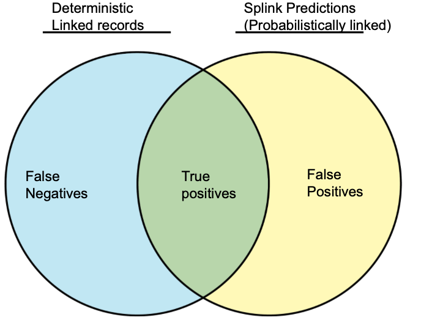
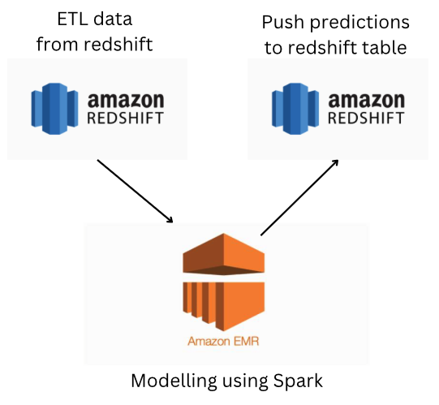
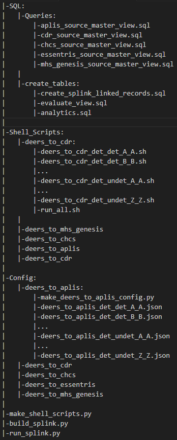

Finding duplicated hospital records across databases using Spark & Machine Learning¶
By Joe Ganser
I Abstract¶
This machine learning project was designed to identify duplicated records across disconnected hospital record databases, where the same person may be under a different name in a different database. Working with ~160 million row datasets pulled via postresql (AWS Redshift) to AWS Elastic Map Reduce Linux system, the Splink machine learning package was used on a PySpark EMR system to identify matching records in different databses.

II Problem statement¶
II.A Problem
When a person goes into a hospital, a human being has to record their information which gets saved to a database. Inevitably, such processes leads to erroneous data points. For example, a person may use their short name when walking into a hospital, ("Joe" vs "Joseph") or a clerk may record their birthdate off by a single character.
The US Department of Defense wants to ensure that it's personelle get the health care they need. Thus when a soldier get's treated at one VA hospital, it's important that the database records match up to when that soldier gets treated at different hospital. Using machine learning techniques - specifically the Fellegi Sunter model [1] provided the by the PySpark Splink package [2], we can predict what records link up.
There are two main use cases - finding duplicated records within the same database, and finding linked records across different databases. On a row by row comparison both are fundamentally the same problem (e.g. linking record Joe to record Joseph).
This is a big data problem. The total dataset consisted of about 160 million records, stored on various tables in postgres SQL (AWS Redshift). To do this level of computing PySpark EMR systems were used on partitions of data.
The databases we will be evaluating and connecting are;
- Deers
- CDR
- CHCS
- MHS Genesis
- Aplis
- Essentris
Deers consists of the most deterministically matched records [3], and has the highest quality of data. The goal is then to take all the other tables and find rows within them that match to Deers. Hence the linkage jobs will be;
- Deers to CDR
- Deers to CHCS
- Deers to MHS Genesis
- Deers to Aplis
- Deers to essentris
Deers is always the "left table" and the other tables will be the "right table" when we set up the code.

II.B Performance evaluation
No machine learning problem should be done without some form of fitting and evaluation. Surely there must be a rule of thumb to identify matched records - and there is. Using a deterministic matching criteria, we can identify if two records are identical. The deterministic matching [3] criteria is;
levenshtein_distance(l.patient_ssn,r.patient_ssn)<=1 and levenshtein_distance(l.dob,r.dob)<=1 and l.dodid = r.dodid
What does this mean? Consider two patient records, we have the following data points;
l.patient_ssn(left patient social security number)r.patient_ssn(right patient)l.dob(left patient date of birth)r.dobl.dodid(left patient dept of defense id number)r.dodid
Now using the levenshtein_distance(x,y) function [4], we ensure that the levenshtein_distance is less than or equal to 1 when comparing the social security numbers and dates of birth.
So since we have a way of finding deterministically matched records, we need to see how many records splink matches out of ones we know have deterministic matches. There are records which dont have all these features (e.g. missing ssn or missing date of birth), so we use Splink to match those records.
Thus to fit our model, we train on records we know have a specific quantity of deterministic matches, as we count how many records our machine learning model also identifies out of the known deterministic matches. This allows us to transform a problem originally labeled as unsupervised into a classification problem.
The business use case of this data will be to send the matches identified via machine learning to analysts. It's better that we have our machine learning problem identify more matches than less, so even if we mistakenly identify a few extra that happen to be a fluke, the analyst teams will pick that up. Therefor, the metric we seek to maximize is recall = TP/(TP+FN).
II.C Graphical visualization

II.D Data Input
The data input consists of two dataframes, a left table and a right table. The left table is always deers; here's an example of what it should look like (note: this is random, fake data)
| master_record_id | patient_ssn | sponsor_ssn | dodid | first_name | middle_name | last_name | dob | sex_gender | address_zip | phone_number | marital_status |
|---|---|---|---|---|---|---|---|---|---|---|---|
| 76 | 531-43-6045 | 402-85-6842 | 912 | Michael | Sarah | John | 1983-09-10 | Male | 19318 | 201-193-9657 | Married |
| 42 | 403-76-1253 | 701-23-4179 | 854 | Anna | Michael | Ella | 1991-10-08 | Female | 49270 | 520-769-3756 | Single |
| 18 | 659-48-3219 | 798-34-7156 | 527 | David | Chris | David | 1978-04-12 | Other | 38201 | 418-578-6719 | Widowed |
| 10 | 746-51-9072 | 395-78-2361 | 731 | Jane | Ella | Chris | 2001-02-19 | Male | 47032 | 783-926-1485 | Divorced |
| 25 | 301-35-8410 | 930-24-5709 | 41 | Michael | Anna | John | 1975-07-25 | Female | 61502 | 485-537-1250 | Married |
The right table is any of the others, and it should have the same structure as its left counter part;
| master_record_id | patient_ssn | sponsor_ssn | dodid | first_name | middle_name | last_name | dob | sex_gender | address_zip | phone_number | marital_status |
|---|---|---|---|---|---|---|---|---|---|---|---|
| 34 | 671-25-4920 | 825-60-3197 | 788 | Emily | Chris | John | 1987-03-04 | Male | 27546 | 514-458-2780 | Married |
| 93 | 518-17-6852 | 624-93-7406 | 244 | Sarah | Jane | David | 1993-11-12 | Female | 34625 | 315-648-1023 | Widowed |
| 70 | 823-14-3790 | 759-61-2194 | 309 | Anna | Michael | Michael | 1974-08-05 | Other | 45170 | 254-976-8453 | Divorced |
| 29 | 432-85-6071 | 693-18-4325 | 68 | Chris | David | Emily | 1982-09-19 | Male | 57938 | 623-792-1465 | Single |
| 57 | 917-20-3456 | 568-43-7094 | 482 | Jane | Sarah | Anna | 1989-01-28 | Female | 61845 | 812-534-7892 | Married |
II.D Model output
Splink outputs that compare the contents of the left table to the right table, including the feature values. See source [5] for more details on splink outputs.
| match_weight | match_probability | source_dataset_l | source_dataset_r | master_record_id_l | master_record_id_r | dodid_l | dodid_r | marital_status_l | marital_status_r | dob_l | dob_r | first_name_l | first_name_r | last_name_l | last_name_r | middle_name_l | middle_name_r | patient_ssn_l | patient_ssn_r | sponsor_ssn_l | sponsor_ssn_r | address_zip_l | address_zip_r | phone_number_l | phone_number_r | sex_gender_l | sex_gender_r |
|---|---|---|---|---|---|---|---|---|---|---|---|---|---|---|---|---|---|---|---|---|---|---|---|---|---|---|---|
| 0.243675 | 0.225771 | deers | cdr | 54 | 60 | 304 | 556 | Single | Widowed | 1977-07-20 | 1976-10-12 | Michael | Sarah | Chris | Ella | Emily | Sarah | 852-20-3542 | 112-83-3845 | 843-56-3871 | 584-40-6824 | 35218 | 28347 | 580-715-8025 | 586-556-9460 | Female | Other |
| 0.845703 | 0.526719 | deers | cdr | 40 | 95 | 900 | 561 | Divorced | Divorced | 1995-11-18 | 2000-05-25 | Anna | Jane | Emily | Sarah | Michael | David | 538-76-5691 | 611-38-7600 | 180-93-5798 | 679-96-9268 | 87420 | 23700 | 224-897-1108 | 278-472-9467 | Female | Male |
| 0.415201 | 0.698438 | deers | cdr | 88 | 32 | 882 | 241 | Widowed | Divorced | 2000-05-23 | 1979-06-19 | Chris | John | John | Chris | Ella | John | 384-64-4543 | 320-17-1851 | 267-58-3842 | 972-91-1036 | 40267 | 61495 | 110-573-2290 | 789-308-1485 | Other | Male |
| 0.179206 | 0.151502 | deers | cdr | 12 | 17 | 100 | 874 | Widowed | Single | 1973-07-06 | 2001-10-07 | Jane | John | Chris | Michael | Jane | Ella | 767-62-6327 | 141-74-4313 | 694-83-1784 | 378-75-9142 | 96224 | 87513 | 330-698-1749 | 274-686-4680 | Male | Female |
| 0.806254 | 0.234726 | deers | cdr | 21 | 80 | 353 | 233 | Married | Widowed | 1998-06-18 | 1977-01-18 | Emily | David | David | Anna | Chris | Sarah | 895-35-7183 | 940-95-6700 | 428-26-1507 | 801-24-2043 | 68631 | 30905 | 988-143-5132 | 953-763-2438 | Female | Male |
III Splink & the Fellegi Sunter Model¶
III.A The fellegi sunter model
The fellegi sunter model was developed to identify duplicated and probabilistically linked records in databases. Under the hood, the mathematics are quite similar to Naive Bayes classification methods. It works by using "rules" (relationships between column features) to create model weights that estimate whether a record is a match (M probability) or unmatch (U probability).
III.B Splink slides
Splink [2] is a python & Spark package that integrates the Fellegi Sunter model under the hood to identify records that match with each other. It is the code framework to integrate with Spark on the AWS Elastic Map Reduce system. For a more detailed explanation, see the slides below;
IV Spark, AWS Elastic Map Reduce & PostgreSQL (Redshift)¶
The configuration between AWS EMR and Redshift can be seen in the diagram below. Data is extracted from postgreSQL (redshift), where the ETL is done in SQL. It is then processed using Pyspark code and the results are pushed back to postgreSQL.

V Model Design¶
V.A code & system structure
The full scale machine learning system has the following file path structure

V.B SQL files
SQL/Queries
These are the main queries that extract from each table. Within the redshift schema, they pull from the master_system_view, and each file is named in accordance to the data source it represents. aplis_source_master_view.sql extracts the contents of Aplis in the master_system_view.
SQL/Create_tables
create_splink_linked_record.sqlcreates a table that we push the splink predictions to from EMR.evaluate_view.sqlcreates a view of all the results for each associated config file and its associated time stampanalytics.sqlis represents the aggregated analytics on the number of true positives, false positives, etc for each table source.
V.C Shell scripts
The shell scripts are detailed spark submit commands that get the spark cluster to run several files;
* run_splink.py (which imports build_splink.py)
* A .json configuration file, included in the lines of the shell script that set the parameters for run_splink.py via argparse arguments
For each linkage job we have a series of shell scripts in a given folder. For example, for the case of linking deers to cdr, we have a folder of shell scripts for this job. Each shell script has a naming structure;
config/deers_to_cdr/deers_to_cdr_det_det_A_A.sh: The namedeers_to_cdrindicates the left table isdeers, the right table iscdr,det_detindicates the left side has only deterministically matched records, and so does the right side.det_undetwould mean the right table has non-deterministically matched records. The suffixA_Ameans we're linking people in the left table whose names only begin withAto people in the right table that also begin withA.- We only focus on matching first names that have identical first initital comparisons - non identical first initial comparisons (e.g.
A_B, (comparing Alfred to Bill) dont yield very many matches).
- We only focus on matching first names that have identical first initital comparisons - non identical first initial comparisons (e.g.
deers_to_cdr_det_det_A_A.sh
- Each shell script takes about 6 minutes to run
- For each folder, we combine all individual shell scripts (
A_A,B_B, etc) into one big shell script calledrun_all.sh. This allows for us to run each linkage job indepedently, avoiding out of memory failures. -
Each shell script references a
.jsonconfig file that then loads the parameters of the particular job -
make_shell_scripts.pyproduces shell scripts for each linkage job and each first name initial. Thus for each source table (cdr,aplis,chcs,mhs_genesis,essentris) we also product shell scripts for deterministically matched and un-deterministically matched records, and for each those combinations we make a shell script for each letter of the alphabeter (first name starts with A, B, C, etc).
V.C Config files
The config file structure shares a similar nomenclature to the shell scripts, but the contents are in json format and detail splink parameters. Each linkage job contains a python script that makes a .json config file for each possible shell script comparison. For example, config/deers_to_aplis/make_deers_to_aplis_config.py has a dictionary for all the base blocking rules and splink comparisons, but then produces an associated .json file for each possible first name initial, and both deterministic and non-deterministic matches (52 total config files per linkage job - all conveniently ran in a sinlge EMR instance using run_all.sh).
Here is an example of a config file for deers_to_chcs_det_det_A_A.json;
deers_to_chcs_det_det_A_A.json
VI Model Evaluation¶
VI.A Results Analytics
In the following table below we have the analytic results for the model performance on each data source. For each row, two comparisons are made; * deterministic to deterministic - (both the left and right dataset have only data points with a dqi_id, so both side are deterministic matched) * deterministic to probabilistic - (the left side, deers, has deterministically matched records, but the right side has records without a dqi_id, so it can only be matched probabilistically)
For each data source, we observe the model performance on records that are known to be deterministically matched, and we see how many records Splink probabilistically matches. The results are generally close.
| source_system | total_deterministic_matches | true_positive | false_positive | false_negatives | splink_matches_no_dqi_id | splink_matches_with_dqi_id | recall (aggregated) |
|---|---|---|---|---|---|---|---|
| chcs | 4115825 | 4107783 | 148413 | 8042 | 1185 | 4256196 | 0.9980 |
| cdr | 18360601 | 18109355 | 237846 | 251246 | 55659358 | 18347201 | 0.9863 |
| essentris | 639139 | 457515 | 28725 | 181624 | 2279 | 486240 | 0.7158 |
| aplis | 7268069 | 6961681 | 25096 | 306388 | 8631848 | 6986777 | 0.9578 |
| mhs_genesis | 5821864 | 1408745 | 14248 | 4413119 | 36802 | ||
| 1422993 | 0.2419 |
VI.B Venn Diagram
VII Major challenges¶
There were two huge challenging blockers in the development of this project. When building anything, you sometimes face problems that are out of your control.
VII.A EMR failure
Due to beurocratic and logistic problems, our AWS Elastic Map Reduce (EMR) system had been set up to fail repeatedly. In the beginning someone with higher permissions access had set our cache memory to be zero. This made training any model with more than 100k rows basically impossible. To make matters worse, we had no way of checking our parameters because permissions issues. This issue delayed us for several weeks, and after final appeal to the DOD, we got some assistance.
VII.B Splink documentation
Splink itsself is ran by a small team and their documentation is written by someone whose clearly multi-tasking. Despite being relatively user friendly, it's tutorials only had some steps written in python pandas format, not spark format. This made it impossible to convert large scale predictions into dataframes without running out of memory on EMR. It wasn't until my team looked through some old backend documents that allowed us find a function we needed to convert our prediction results into a spark dataframe.
VIII Sources¶
- https://moj-analytical-services.github.io/splink/topic_guides/theory/fellegi_sunter.html
- https://moj-analytical-services.github.io/splink/index.html
- https://en.wikipedia.org/wiki/Record_linkage#Deterministic_record_linkage
- https://en.wikipedia.org/wiki/Levenshtein_distance
- https://moj-analytical-services.github.io/splink/demos/tutorials/05_Predicting_results.html